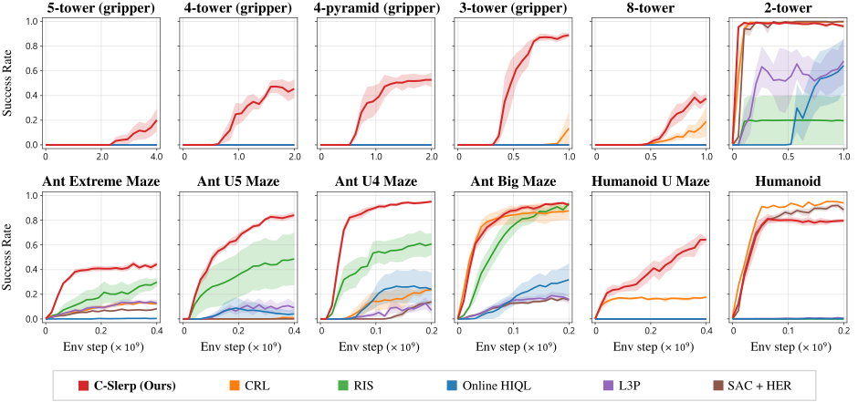
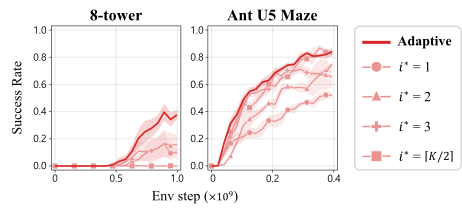
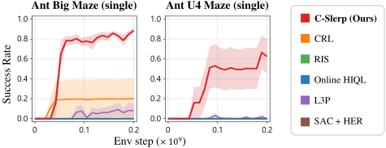
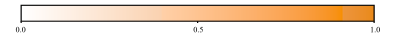
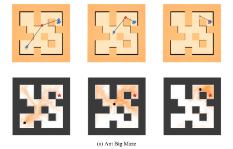
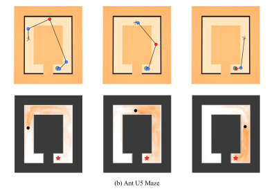
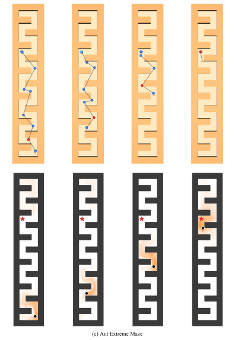
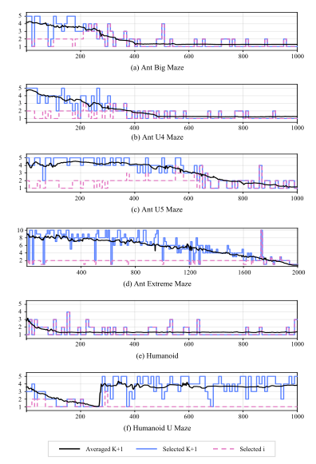
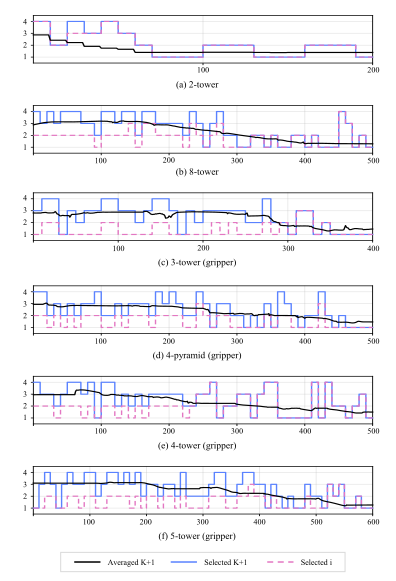

Hyperspherical Contrastive Representations
Unlock Planning and Exploration
* Equal contribution
TL;DR
The key is adaptive planning. C-Slerp composes hyperspherical contrastive representations to decide how many waypoints each state-goal pair needs, and infers them in closed form via spherical linear interpolation (SLERP), with no high-level policy or graph search.
C-Slerp: Contrastive Planning via Spherical Linear Interpolation
Given a state and a goal , we use intermediate waypoints to decompose the long-horizon task into shorter subproblems. The four steps below show why spherical interpolation of learned contrastive representations gives these waypoints.
Hyperspherical contrastive representations
We parameterize temporal relationships using contrastive representations that lie on the unit hypersphere. We learn a state representation , a state-action representation , and a rotation matrix , and score temporal relationships with
We collect data online under a hierarchical goal-conditioned policy , where every steps a planner provides a waypoint representation for to pursue.
Using samples from this data-generating process, the representations are trained with contrastive learning on pairs separated by an interval drawn from . Under the symmetric InfoNCE objective, the Bayes-optimal takes the form
The learned rotation matrix can capture asymmetries in the dynamics, which a standard inner product cannot, since it is symmetric. This allows us to score an entire waypoint sequence by repeatedly applying a single to consecutive waypoint pairs as a reusable building block.
Planning as probabilistic inference
We take a probabilistic approach to planning. Given a state and goal , we infer intermediate waypoints along trajectories generated by , setting and . Consecutive waypoints and are separated by an interval , drawn independently for .
We approximate the resulting posterior with a tractable distribution :
Each segment from to spans one interval drawn from a geometric distribution, which is exactly the temporal relationship is trained to score. Scoring every segment with thus tells us how well a sequence of waypoints connects to .
For now, we fix and derive the corresponding optimal waypoints; we then derive a criterion for adaptively selecting for each state-goal pair in Geometric interpretation of C-Slerp below (step 1, Select ).
Tractable reformulation
We factorize , with one distribution per waypoint , so that can be optimized in the same way for varying numbers of waypoints . Under the Bayes-optimal and the Markov assumption, the original KL objective becomes
It maximizes the expected sum of between waypoints while keeping each close to the marginal of visited states. Since the policy depends on a waypoint only through its representation , we infer instead of raw states, and the uniformity of the learned representations on turns the KL term above into an entropy term. The objective is then reformulated as follows:
This objective links the current state to the goal by repeatedly aligning consecutive representations through , while the entropy term encourages stochasticity.
Closed-form solution
We parameterize each as a Gaussian sample normalized onto the unit hypersphere, , , and weight the entropy term by . Under a small-variance approximation, the optimum of is
where . When , the means lie evenly along the geodesic between and . In general, we interpolate from toward the rotated goal and map each point back with . These closed-form expressions infer waypoint representations directly from the learned contrastive representations, without training an additional neural network.
Geometric interpretation of C-Slerp
Experimental Results
- Current state ψ(s)
- Goal ψ(g)
- Inferred waypoints z1:K
- Selected subgoal
How good is C-Slerp?

- We evaluate on six manipulation tasks in BuilderBench and six locomotion tasks in JaxGCRL.
- C-Slerp achieves the highest success rates on most tasks, and is the only method to succeed on every cube-stacking task with a gripper, where most baselines never achieve a single success.
- The gap widens as the horizon grows: more cubes, gripper control, or larger mazes.
Additional Experiments
See the paper (Appendix B) for detailed settings and further analysis.
What makes C-Slerp work?

- Fixing the number of waypoints or the waypoint index that the policy pursues substantially degrades performance, and adding more waypoints alone does not help.
- Too few waypoints make each subproblem too hard; too many slow progress with unnecessary stages. The plan should match the difficulty of the problem.

- With a single goal fixed throughout training and evaluation, C-Slerp achieves higher success rates than all baselines, while all baselines except CRL and L3P achieve zero success.
- C-Slerp facilitates directed exploration toward distant goals.
- We compare learning with three fixed alternatives: the identity , and two random rotations whose Cayley parameters are sampled with .
- Setting makes symmetric and prevents successful learning in both tasks. Random fixed rotations introduce asymmetry but yield unstable performance.
- Asymmetry alone is insufficient; learning is necessary to capture temporal relationships between states.
- A natural way to adapt CRL to long-horizon tasks is to increase , since future states are sampled at offsets drawn from .
- Across , CRL achieves low success rates, and increasing does not close the gap with C-Slerp.
- Simply extending the temporal horizon of contrastive learning does not offer the same benefits as planning with an appropriate number of waypoints.
How do hyperparameters affect C-Slerp?
- Since C-Slerp uses contrastive representations, we examine whether it benefits from increased network depth, as reported by Wang et al. (2025).
- Deeper networks generally achieve higher success rates. On the 8-tower task, depths of 16 and 32 perform comparably and outperform shallower networks.
- Performance is relatively robust once is sufficiently large, with further increases providing no consistent benefit.
- On the 8-tower task, only achieves nonzero success. We hypothesize that this limited benefit arises because the encoder already provides sufficient nonlinear expressivity for the linear operator to model temporal relationships effectively.
- A larger favors earlier waypoints, leading to more conservative subgoal selection.
- C-Slerp performs well across in all evaluated environments except the 8-tower task, which is more sensitive to the threshold.
- We use as the default configuration across all tasks.
Visualizations




- We encode all positions across the entire maze, including walls, on a grid with 0.2 m spacing. For each inferred waypoint , we retrieve its nearest neighbor among these representations, and display at every grid point as a heatmap.
- Although the waypoints are generated entirely in the latent space, they correspond to meaningful intermediate locations in the environment.


- We plot the mean and sampled values of , the total number of transition segments to the goal, together with the selected waypoint index .
- The mean of decreases as the agent approaches the goal, suggesting that the learned representation captures the progress of the agent toward the goal.
Final Remarks
- Although C-Slerp can be viewed as a hierarchical goal-conditioned RL method, it achieves these benefits without a separate high-level policy network or a planning graph.
- Instead, planning follows directly from spherical linear interpolation in the learned representation space, showing that adaptive planning need not require a complex architecture.